来源：https://jnbsgdsqir.feishu.cn/docx/QaUbdYjnpoQCVwx1JNicygJ8nrd
大家好，我是天道。一位90后连续创业者，8年互联网经验，互联网项目一线实战派，目前专注商业私域引流和英语提分项目。潜伏社群两年了，一直在默默的学习，很少发过文，今天给大家分享下我们最近在跑的一个小众教育项目----英语提分项目。
英语提分教育赛道做这种类型的流量很值钱，我们叫他为“家长粉”。
作为同是两个孩子的我，我宁可自己苦着累着，但是绝不让自己的孩子受到任何的委屈。
所以，作为我们这种家长粉，能变现的方式太多了。当下我们能通过英语提分这块赚到。后期升学规划，艺术培训......等等很多都是大蛋糕，都是客单价比较高的项目，也都是支撑了很多上市公司业务的项目。
我去年分享过一篇关于教育赛道的文章，家教项目
也在去年做家教过程中，收集到很多家长的心声。
现在小孩太内卷了，同班同学成绩好的都在补课，成绩不好的更加。
而有些家庭面对动辄一节补课费用就是几百，实在有些经济压力。
又想让孩子的成绩提高，于是这种提高英语学习分数的AI系统就应运而生。
用补习几节课的费用就可以用一年系统。
而我们的系统就是帮小孩提高英语记单词语法，从而提高英语成绩的这么一套提分系统。
并且英语提分他卖的是软件，不受双减政策任何影响，非常适合放大。
意识到其中的机会，我今年2月份就安排了一个合伙人开始跑。其中踩了不少坑，最终跑通了现在在做的流量模板和转化SOP，也让我们单人5个月干了18万利润。
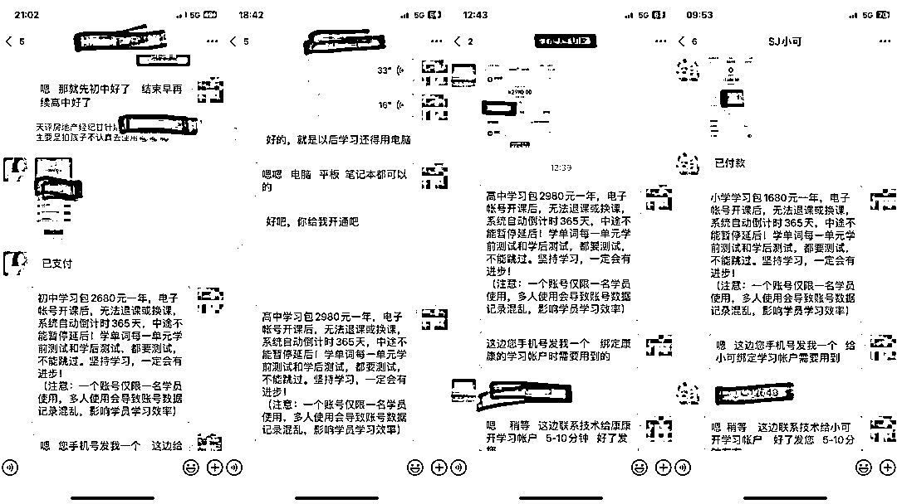
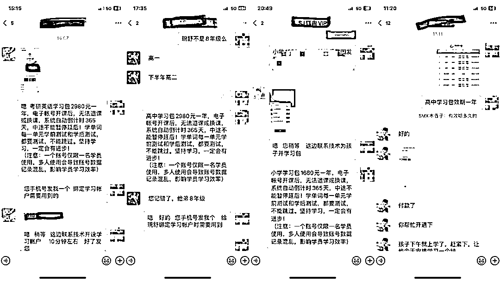
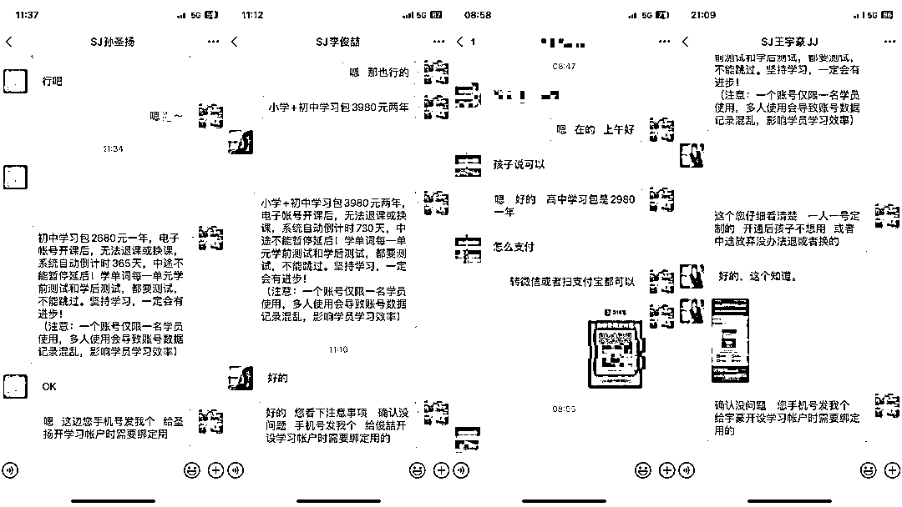
每天私信回复不过来的，每个都是精准客户。
在完全跑通了引流转化模型后（这一步从2月到6月做了整整5个月）。
在7月份便发挥自身的网创圈资源优势。组建了第一个线上百人团队，7月也迎来了这个项目的爆发期，一个月时间团队产值卖了50万的课程包。
一个项目跑通了，如何去放大收益是摆在我们眼前要走的路。
当时做决策是两条路可以走：
1.扩大自营团队，招一批员工去做
2.招一批学员，以出单分润的模式去跑
哈哈，最终的决策是：小孩才做选择，我们全都要。
自营团队从当初跑通项目的一个人扩到了十个人。
同时招募了一期押金打卡训练营，让学员准备五个视频号，每天打卡的方式和我们同步在跑。
因为我们的客单价比较高，出一单就是四位数利润起步，所以大部分学员也一直坚持每天实操打卡。
经过7-15天的起号期，第一期的打卡营学员陆续出单。
用我们标准化的引流模板和成交链路。截止目前坚持下来打卡的学员40%都出单了。
我们测过很多主流的流量渠道，也测试过很多种形态的引流打法。
测试下来，做英语提分项目，微信体系内的视频号是路径最顺的，抖音和线下也还可以。
微信和视频号都是腾讯生态的产品，自家兄弟，所以视频号引流到微信，无需跨平台引流，引流和转化都非常顺畅。
相反，其他平台做，引流到私域流程就比较复杂。
比如抖音，其实很多时候流量也还不错，但是引流的效率远不及视频号，毕竟要切换软件，并且抖音的发作品机制比视频号严格很多。
为了给大家看新号现在做是怎样的效果，我们三天前新起了一个账号，这是第3天的数据，一共发了6条视频，爆了2条，就引流私域100+了。
可见，当前视频号英语提分赛道起号还是相对容易的。说明目前还不算卷，适合入场。
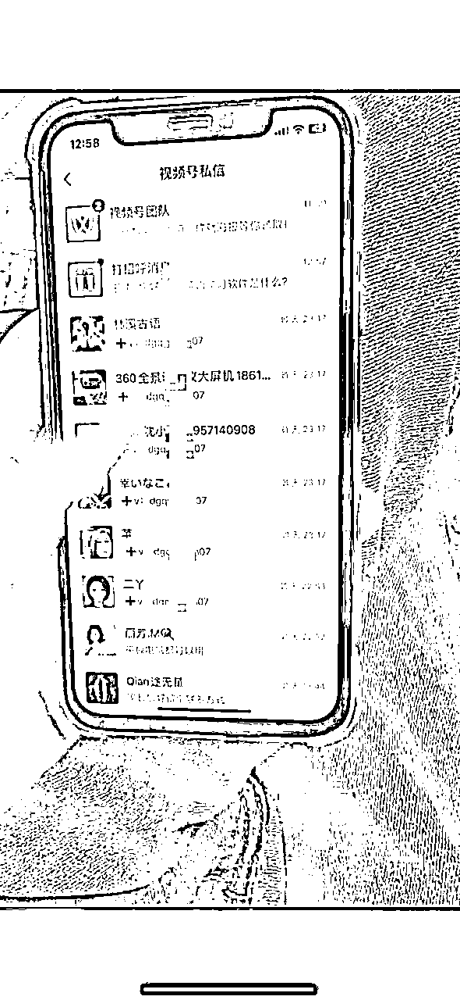
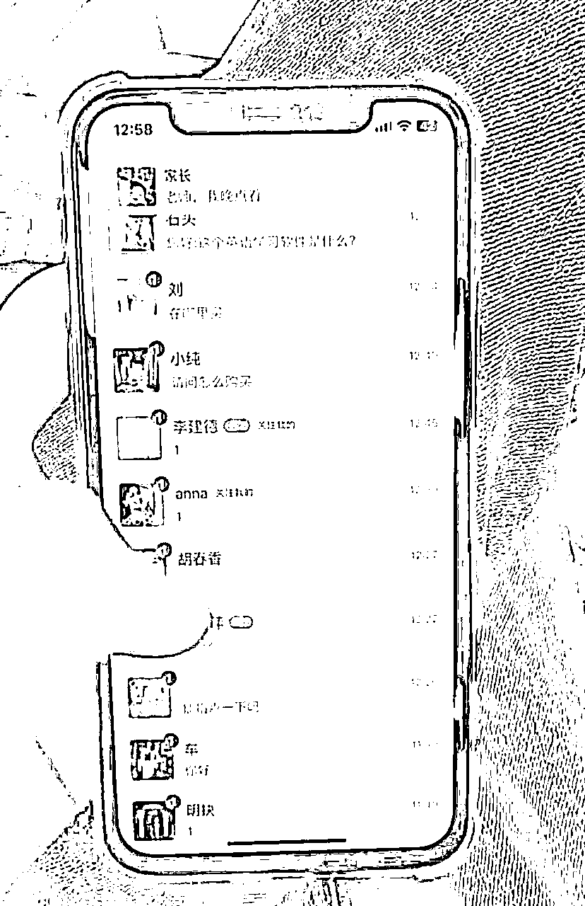
估计有伙伴会觉得自己又不太懂英语，连英语都不认识太多，能做么？
做这个项目包括：
1.流量。做英语提分视频吸引流量，这个简单的拍摄剪辑两三分钟就可以制作一条。
2.引流到个人微信。视频号的引流路径十分简单、手段也非常丰富，后面都会详细给大家拆解。
3.销售体验课及年费产品。
a.体验课。
体验课39.9元，家长加到我们后，我们把平台基本介绍发过去，很多家长基本就是直接转账的，没有太多的销售话术。
体验课需要我们带着孩子介绍产品后让其试用，这个环节是转化年费产品很关键的点。
b.销售年费产品。
我们自己试下来，体验课转化年费产品的效果非常好，长线看转化率能做到50%。
这些我们都形成了完整的转化 SOP。
所以，新手做这个项目，主要要做的就是发布视频，引流到私域，做体验课转化，做年费产品转化。
具体来看，英语提分项目从 0-1 的最小 MVP 可以总结为：
注册5个视频号>完成账号包装 > 熟悉要转化的产品业务 > 拍摄素材 > 每天每个账号至少发布1条视频（关键） > 引流到私域（关键） > 转化体验课 （关键）> 转化年费产品（关键）
其中，要强调的是：
1.开通账号环节
最低要求开通至少 5 个账号（有条件的可以开 10-15 个），因为平台一旦管控，容易出现限流情况，动辄 1 个星期，账号多可以有足够多的备用。
2.熟悉产品业务
知己知彼，百战百胜。
熟悉产品业务环节是给整个项目打基础的。
有熟悉自己的产品，熟悉家长的心理，才能最好的把产品销售出去。
拍摄视频也可以更加专注，剪辑视频的文案也更能知道怎么调整更容易获取用户的私信留言。
3.拍摄素材，制作短视频。
拍摄制作视频，是本项目的关键动作。其实很简单，熟练了一条视频2-3分就搞定了。
4.不怕重复不怕枯燥，引流路径和话术要持续优化。
引流需要重复、批量发信息，比较枯燥，但很重要，一定不能偷懒，每多一个到私域的用户你就多一个准客户。
5.使用领取体验课引流到私域。
视频号目前我们都是直接用体验课的方式来引流,这种对后面转化产品会有帮助。
6.通过体验课，完成转化产品销售
在这个环节，我们有和客户转化整套话术。
安排用户上体验课、完成体验，只有完成体验课，用户才会被转化。
搭建矩阵账号的第一步，就是注册多个微信账号，开通多个视频号，我们可以用自己或家人的手机号注册，电信宽带可以一拖三，四个手机号的套餐共用，如果账号不够，也可以直接去网上办电信 29 一个月的卡，每月有 100 多G的流量。
手机可以在咸鱼、拼多多或者淘宝上买二手手机，不用买很贵的，三四百够用就行。或者买红米的手机，可以双开微信，一部手机就能注册两个账号。
新手最低准备至少 5 个账号：
1.至少 3 个手机（需要是安卓手机，带微信多开功能，可以同时登陆2个微信账号；如果是苹果手机，没有多开功能，就需要5部。）
2.至少 6 个电话卡（1 个视频号需要 1 个实名微信号，对应 1 个电话卡。5个使用，1个备用）
3.一台电脑（用来拍素材）
4.1-2个业务微信号，用来承接流量（可与视频号所属微信共用，但最好用老号）
电话卡推荐：
剪辑的话，手机端就快影和剪映，快手抖音的两个软件，基本需求就够了。剪映能直接导出 60 帧。
我们所用到的剪辑方法非常简单。
完成个人实名认证（只要微信实名了则视频号不需要实名，如果跳出实名再按以下步骤操作实名即可，能正常发作品则不用去实名视频号）：
账号登录：
用双开的形式，1 个手机登 2 个微信。
或者每个手机登陆1个微信。
也可以把多个视频号的运营者，都绑定自己的大号微信，之后就能用网页版登录这些视频号进行操作。
需要注意：
如果多个视频号绑定了同一个微信号为运营者，该微信号一次只能同时登录一个视频号。
比如，微信号 A 绑定了视频号①、视频号②，如果扫码登陆了视频号①，再登录视频号②的时候，视频号①就会被退出，再登录需要重新扫码。
既然是做英语提分，那账号的定位必然是英语提分老师。
以下为我们做账号变现的路径。
英语提分账号-发布英语提分类视频-引流私域转化体验课-转化软件年费包
下面直接给大家一些账号参考。
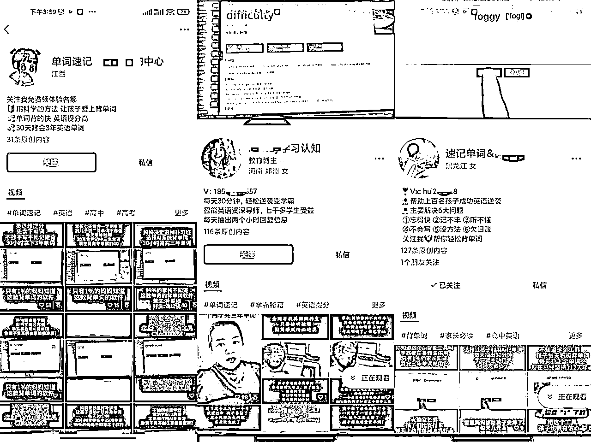
接下来，我们参考上面的对标账号，完成账号包装。
怎么包装自己的账号
名字参考：AI速记肖老师，单词速记肖老师，英语速记肖老师，速记单词肖......（这里肖可以改成你们自己的姓，如果提示名字已用，再增加前后缀）
头像：看着像老师的最好，前期如果不确定，可以直接用我们提供的统一头像。
头像：
背景图：
1.直接了当的只留微信（发作品半个月后的号再留微）。
2.表现出教学时间长，效果好
用科学的方法 让孩子爱上背单词
30天背会3年英语单词
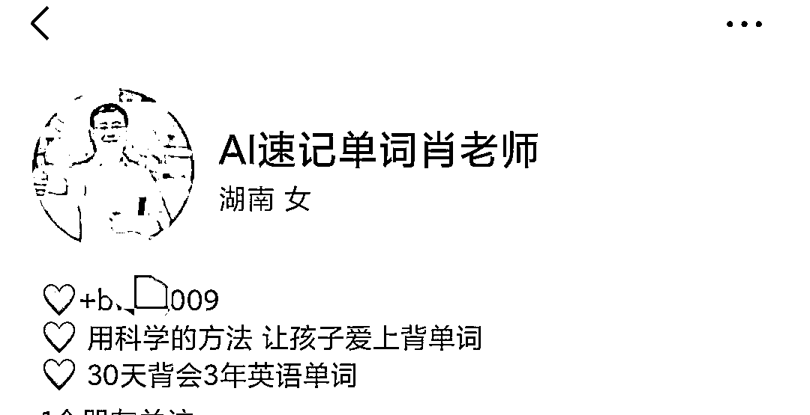
昵称一年只能更改 5 次。
简介在视频号创建完成后可修改。修改路径为：视频号主页头像 → 右上角 → 头像 → 简介
对标账号的标准：
对于视频号英语提分类目来说，对标账号更多要符合这几类要求：
找对标账号的方法：在各平台中查找对标账号。
虽然我们做的视频号，但我们找对标除了视频号本身，其他不限于：抖音、快手、小红书。
可以在以上平台搜索【单词速记】【速记单词】【帮你背单词】【AI英语】【智能英语提分】等关键词，寻找对标账号。
找到对标账号后记得关注，我们后续再刷视频的时候，就会被推送更多相似的对标账号。
我们做英语提分类的视频作品主要有以下几种方式：
对着电脑拍摄的模式很简单，是个人都会拍。
自己手持手机拍摄-即可，或者购买一个手机支架。
每个视频拍摄时长8-15秒，拍摄完成后导入剪映调速1.2-1.5倍，配上文案即可达到发布要求。
5个视频号账号，每个账号每天发布2个作品，每天至少制作10条视频。
我们可以在时间多的时候一次性制作50或80甚至100条视频。也就是一天把接下来几天需要发布的作品都拍摄剪辑好，放入我们的素材库。到时间发布即可。
英语提分视频剪辑极其容易，简单加个文字描述就可以。
下面，我们就手把手视频带你看看如何使用基础剪辑技巧，制作英语提分视频：
剪映替换视频模板，快速制作：
引流就是要用一些勾子，把目标用户吸引到私域，也就是你的微信号，以便进行转化。
英语提分项目，常用的引流勾子有：体验课领取 / 需要了解回复“1” / 留言“1”发给你。
这种通过客户私信留言，领取体验课引流来的用户，学习的意向很强，贴近我们的目标用户，也更容易转化。
第一种方式：给视频搭配一段钩子文案，就像下面这个视频。
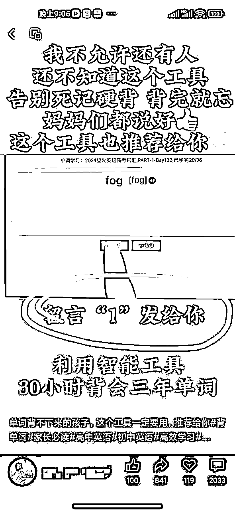
有意向的用户都会评论区评论留言
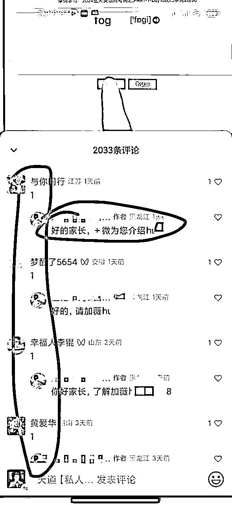
第二种方式：发布时给视频搭配一段视频描述，就像下面这个视频。
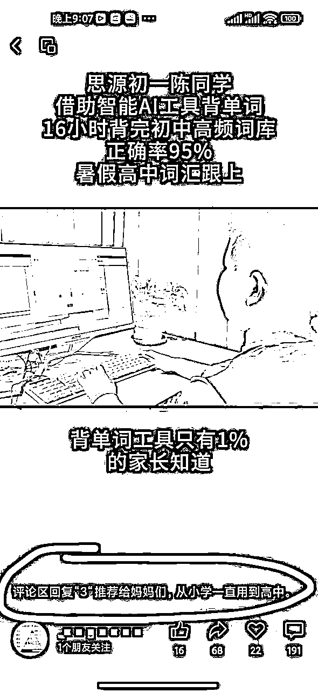
从而引导客户进行评论留言
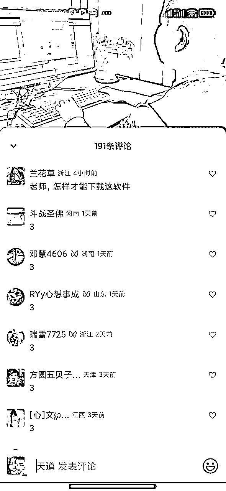
留言回复模板：
你好家长，了解＋微****
你好，家长，加V：*****领取体验课
.......
加到微信私域的用户，我们就要开始运营，转化用户了。
在这个环节，涉及到业务朋友圈的运营，完成转化体验课，从而转化年费会员。
因为只有自己和用户接触，完成转化，用户才能对你产生信任，沉淀为你自己的私域用户，你在英语提分项目的私域才可以慢慢开始有积累，有转化。
所以，如果想要真正拥有自己的英语提分项目转化出单，这是基础。
我们发圈用的5+3+1的朋友圈运营法：
每天5条业务成交及反馈朋友圈+3条线下AI提分自习室朋友圈+1条生活朋友圈
体验课流程
1：设备要求平板电脑、笔记本电脑或者带耳麦的台式机即可。
2：电脑上安装腾讯会议这款视频办公软件
3：我们这边给他准备软件体验账户
4：打开腾讯会议，我带他试用软件速记单词的核心功能，家长最好能陪同一起。
5：孩子亲身试用后，确认对自己有帮助，再付费开通对应的学习包，绑定孩子配套全年段同步英语教材，开始英语提分宝自主学习之旅。
何时约试课？
上学期间，家长一般约晚上的时间多点，因为孩子白天都要上课。礼拜六天，寒暑假全天都可以约。
我们用文档记录好每个家长约课的时间，确定好家长约课的时间不冲突即可。
客户确定试课付费后，到试课时间提前十分钟通知家长，测试确认账号没问题，提前做准备。
体验课一般40-60分钟，但我预留时间一般90分钟，有的要调试设备，有的上完课后要付款开学习包，需要预留30分钟。
具体话术和带领试课的细节教程，群里私发你们，这里不再重复。
确定开课时间后，当天私信一次
话术参考：
**家长您好吖，我们的《体验课》今天下午2点即将开始，请您家孩子空出时间及时参加
关于试课，每个人都会经历这么个流程：
1:第一次试课，紧张，不安，或出单或失败。
2:接二连三试课，连续失败，试课10次当时都一单不出，怀疑自己，觉得试课好难。接下去有那么几天，连续成功。接近100%成单率。觉得自己又行了。
3:在这种心态反反复复的起伏后，自己试课的感觉越来越到位。最后稳定心态，试课成单率稳定到45-65%左右。
“只问耕耘，不问收获”
做的过程中，会遇到很多问题。同样的作品，别人爆流，你限流。同样的话术，别人一个劲收试课费，你一单试课不出。同样的试课，别人转化出单，你连着10个试课一单不出。正常，这个阶段每个人都会经历。迟和早的区别。做好自己，不断优化。少问今天能得到什么，多问自己干了什么。低头耕耘，结果自然来。
我们当天试课，当天转化出单的比例不大的，大多都是当天试课，过几天出单，甚至一两个月后出单。做好自己就行。这个项目我们每天问问自己发了几个作品，导了多少家长，发了几条朋友圈。
现状如何？新人还能入局吗？
一方面，市场大环境好。
21年开始实行双减后，线下教培大面积的打压，很多教育类的上市公司纷纷倒闭或者转行。新东方都转行了。
而教育类的需求却一直存在，哪里有需求哪里就有市场，这就是个千亿级的大市场。
这两三年，线下线上AI教育兴起。用系统替代老师教学。即符合当下政策，又是接下来的行业大趋势。
另一方面，视频号很适合做家长流量。
视频号的中年流量占比非常之高，家庭教育是其中比较大的一个垂类，目前视频号极度缺少这个方向的垂类内容，并且视频号归属于腾讯生态的产品，所以留微信等联系方式的容忍度比其他平台要好。
想赚钱，找到相对有红利的方向很重要，英语提分教育类目目前就称得上是红利赛道。
不过，任何好的赛道，也需要持续的行动和努力，才能取得成功。我们目前也只是利用现有的资源取得了一点小小的成绩。
最后，感谢生财有术平台，越分享越成长。也欢迎志同道合或者有资源的朋友一起交流，可以联系我：BWSKJ888，一起把家庭教育赛道做大最强，共勉！